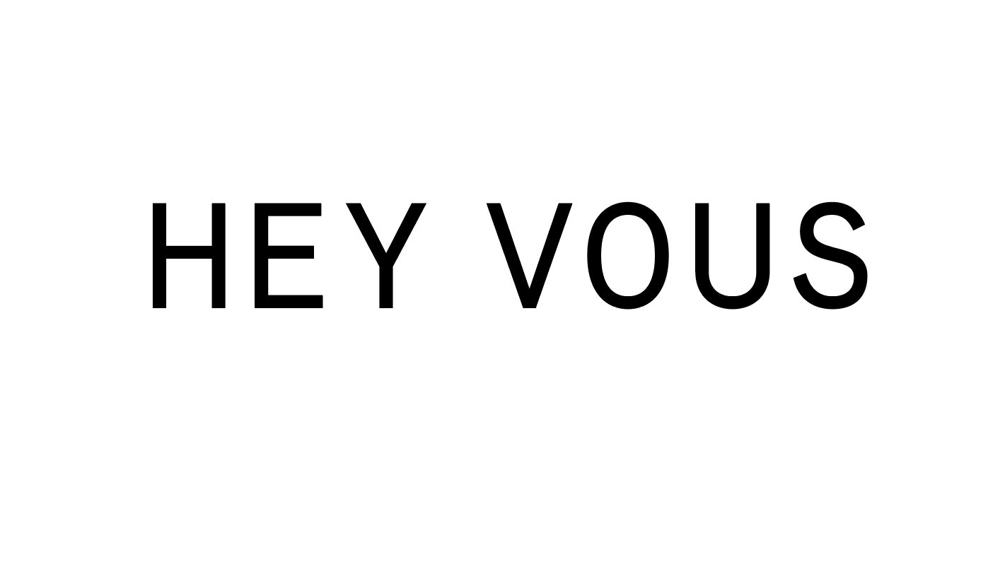

Hey, vous.
We are a band of thinkers and doers from a dozen disciplines.
A collective of writers, designers, strategists, technologists, and more.
Our shared values influence the work we do, and the impact we hope to achieve.
We believe that complex problems are best solved collaboratively.
And that diverse skills, and point of view, elevate any work we do.
Let’s chat. After all, they do say that two heads are better than one.
click
